20261007怎么去脑屏随时使用 现在出去买菜 选择馒头、花卷、油饼 花卷是白亮的
修炼修行民间文化符咒术法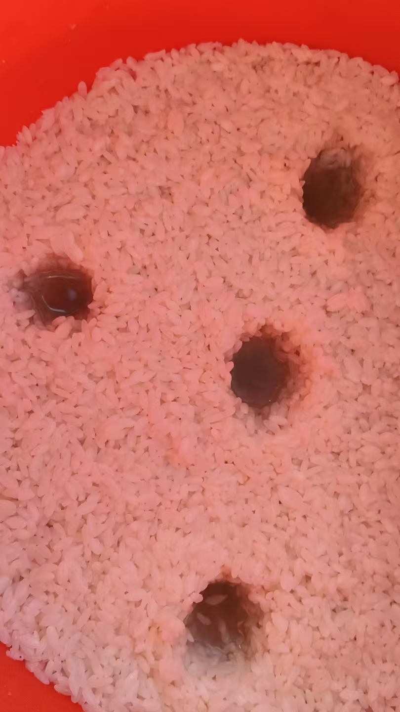
天冷了，酒窝出酒晚了一天
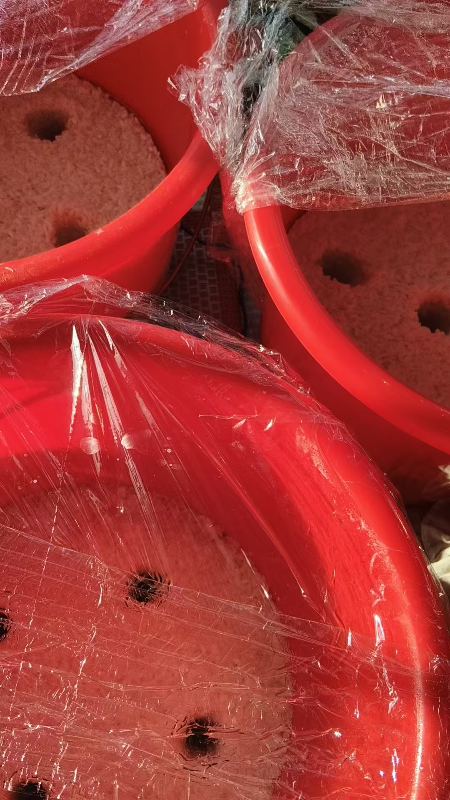
连续做
病毒太顽劣了
各种症状
又见了几个病历
一个脑胀头晕
脑前额叶问题
一个十几岁的孩子，感冒后，心率加快，
一分钟在90-110
身上没劲是普遍问题
我做出来的，那个孔都没了。
一定要蒸米，别煮
煮的米太稀
严格要求
米是硬的
一样精，百样通
做好做细一件事，别的事也能做好做细
[呲牙][呲牙]
几个环节，哪个环节出问题，也做不成功
比如每道工序杀菌
一道杀不好，生绿毛黄毛菌，就失败了
师父这个怎么那么多水？我做出来的水没那么多，是哪里出问题了呢？
米的量及酒曲
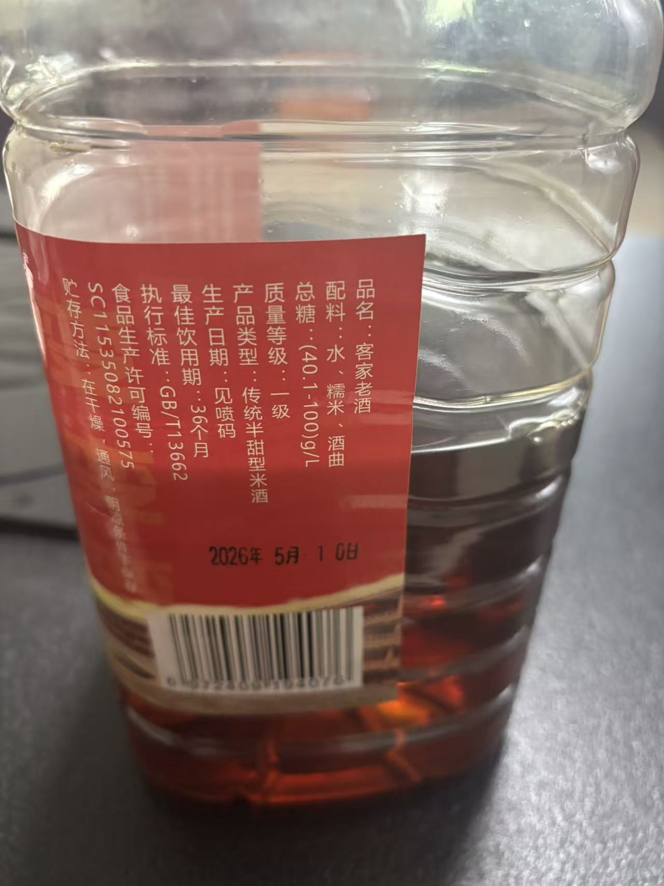
这个酒挺好喝的
这种咋整啊？老师
补充微量元素，增强体质，参加锻炼活动，勤拉手
@南宁智慧象教育 [呲牙][呲牙][呲牙]
关键加水两步，二次发酵
我们这里的人不喜欢吃米，只喝米酒
会做了很简单
我的加水后又有酸味[呲牙]
@南宁智慧象教育 时机，尝着变甜再加
酸的时候加水，就酸了
师父我再试试看[呲牙]
下课了再去试试
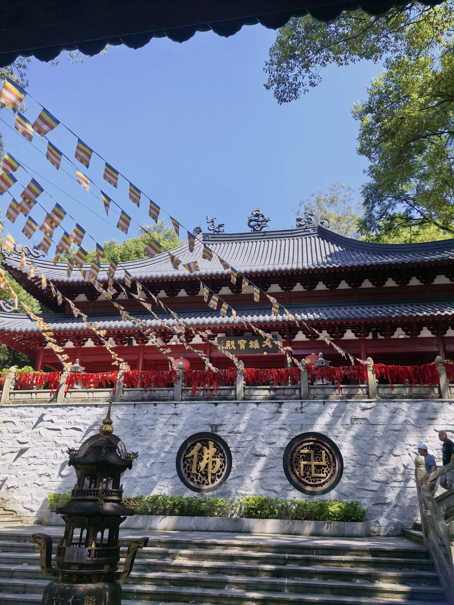
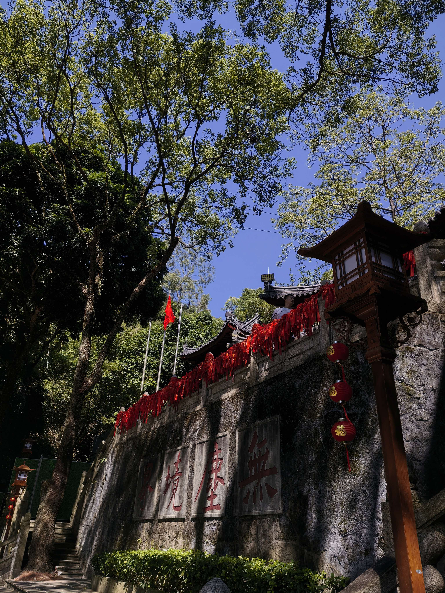
经里提到乾达婆城
到底是什么样子
如果不理解，就达不到这种境界
华藏世界海的体系里
升华为菩萨定中所见的精神境界
样子非常壮观
七宝所成，放万丈光芒，有八道琉璃阶梯，天乐不鼓自鸣
乾达婆城
是现实中的海市蜃楼
修行中的精神境界
金刚经里说的是，世间万物，虚妄不实
如梦幻泡影
呃呃呃，说这一段，我语气是不是变了
更高，更有力度
起高了
不应该说这些
应该说初禅
[呲牙][呲牙][呲牙]
孩子，能够看清楚牌以后，老师应该带孩子，阳神出游
会出更多神通
但现在，百分之八九十的老师，也做不到阳神离体
只去让孩子瞎蒙
[呲牙][呲牙][呲牙]
八仙过海里，太上老君带李玄出游，就是这一招
后来，李玄肉体被毁
因机缘，成了铁拐李
哇，小孩有阳神呀？
你记得有三家相见结婴儿一节吧
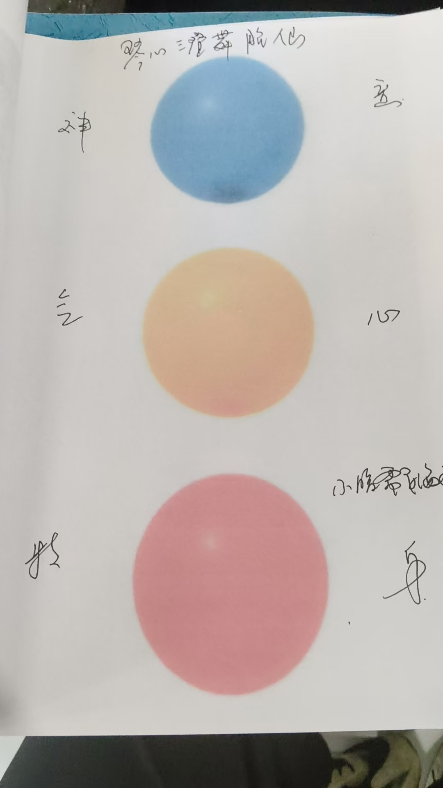
这一个
这时候，是我用我的超能力，帮助大人孩子，打造元婴
元婴分身化身
出能量体
这时候是光化透明的
就是阳神
然后打造元婴，三，九，十五，二十七个基础元婴分身化身
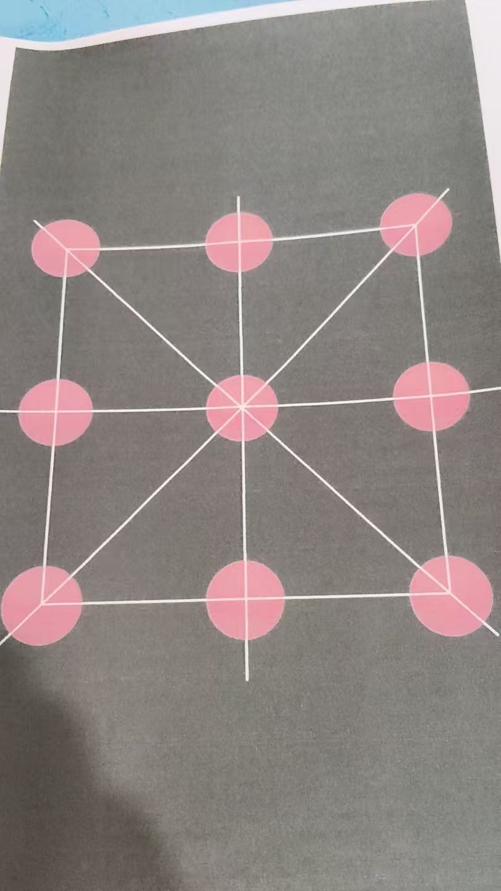
[憨笑][憨笑][憨笑]这一节你不会没学吧，那时候只顾修复身体
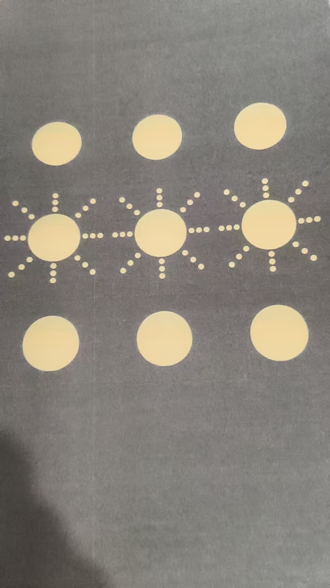
元婴不结，没法分身
一步一步，相辅相成
引导出来的也有，不过不稳定不长久，做事成功率低
我小时候教学，急说了一句，我教的是神仙，学生们教未来神仙
开枝散叶
现在，全国就少了这门实力派技术
[憨笑][憨笑][憨笑]
生逢有时
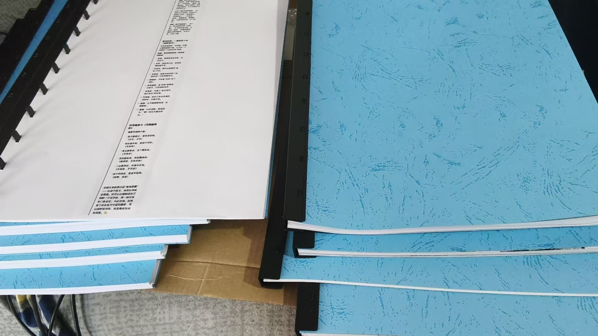
才打印了几天的笔记，都这么多了
读四十华严的时候，多勤奋，可想而知
小乘经典是阿含经
上海玉佛寺的一个学生，给了我一整套，
十几年了，也没看，在供桌上
分身不是感觉
我出去了，分身多少个了
感觉而已，啥也做不了
那是意想分身
真正分身，就像咱们的孩子，剪断钢丝
想一把刀，一张纸割成两半
有验证的
别去空谈
割开的纸，复原
这些消耗能量，不建议追求
但能量足了，随便玩
武侠小书，分身路上遇见高手，被灭了，回不来了
真有
阳神还好
元神离体，回不来，人就死了
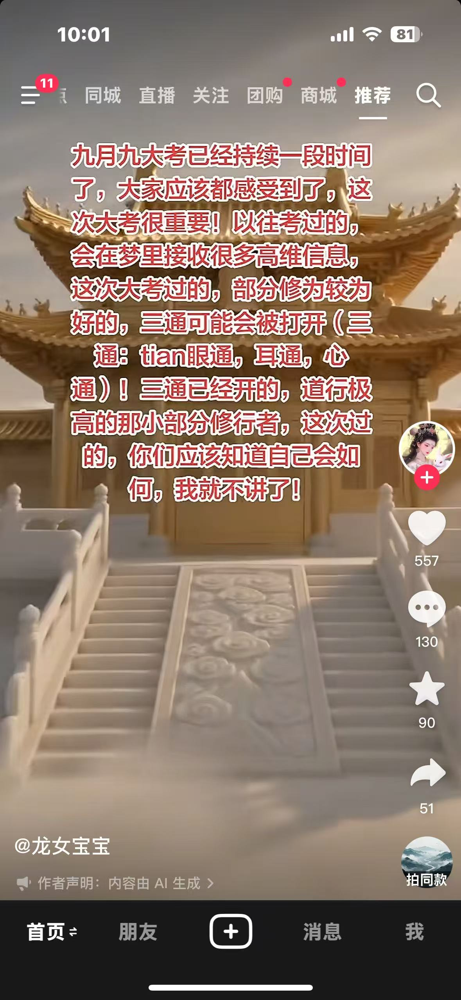
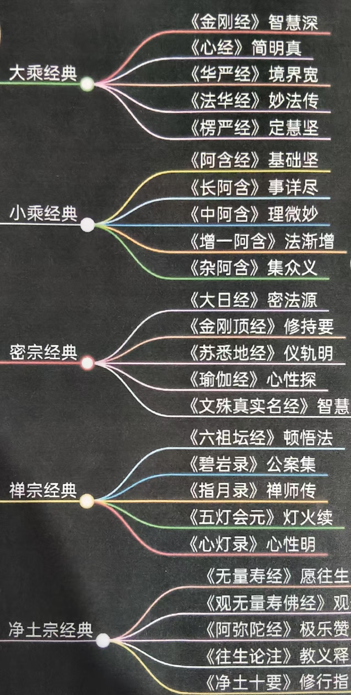
心想事成
[呲牙][呲牙][呲牙]
九月九重阳节
我们这里石门坊红叶节
情人节，相亲大会
因为古时候，一个小和尚一个尼姑的爱情故事
方丈下令把他们打死
当地府衙听说后，让他们还俗成家了
满山红叶
骈邑石门晚照残
临朐古八大景之一
晋代高僧有坐化卧化石堪
光绪皇帝写晚照二字
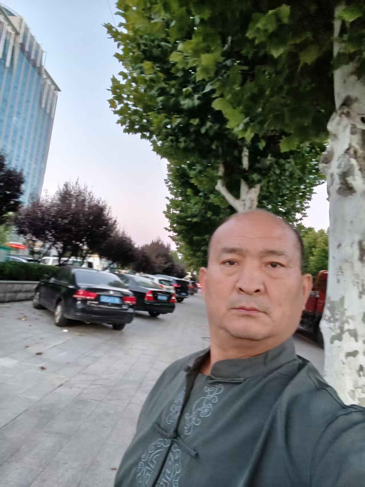
又瘦了一圈
刚才出门口，一群小孩，双手合十，喊师傅师傅
[憨笑][憨笑][憨笑]
怎么去脑屏随时使用
现在出去买菜
选择馒头、花卷、油饼
花卷是白亮的
茄子、芸豆、辣椒
云豆是亮的
哪个亮买哪个
亮的就是最适合身体的
亮就是气场好
住的边上3个超市
西南、东南、东北
东北这个亮
干净、卫生、便宜
这个亮的气场真的会带来好运
肉，蛋，奶
奶亮，蛋半明半暗，肉灰
也就是说不适合太大营养
清炒个芸豆，喝点奶
就这样随时使用，你的脑屏才会越来越亮，越来越受用
别老是不会呀，不会，啥也不是
分辨清楚，别用大脑想

芸豆特价
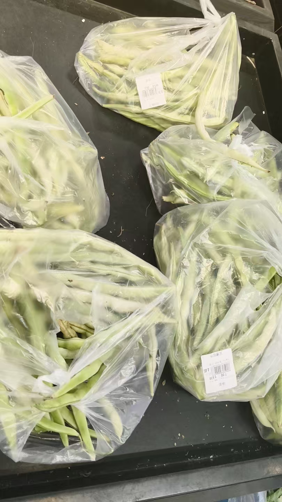
奇怪吧，只有芸豆特价
讨债怎么去看
一看人有没有钱
二看，在不在家
三看，给不给
有钱，在家，就用念力定格，
还
必还
[憨笑][憨笑]
要学会使用
泡菜，我只腌了酸豆角
我们这地方，冬天都有鲜菜，还不贵，没必要多腌
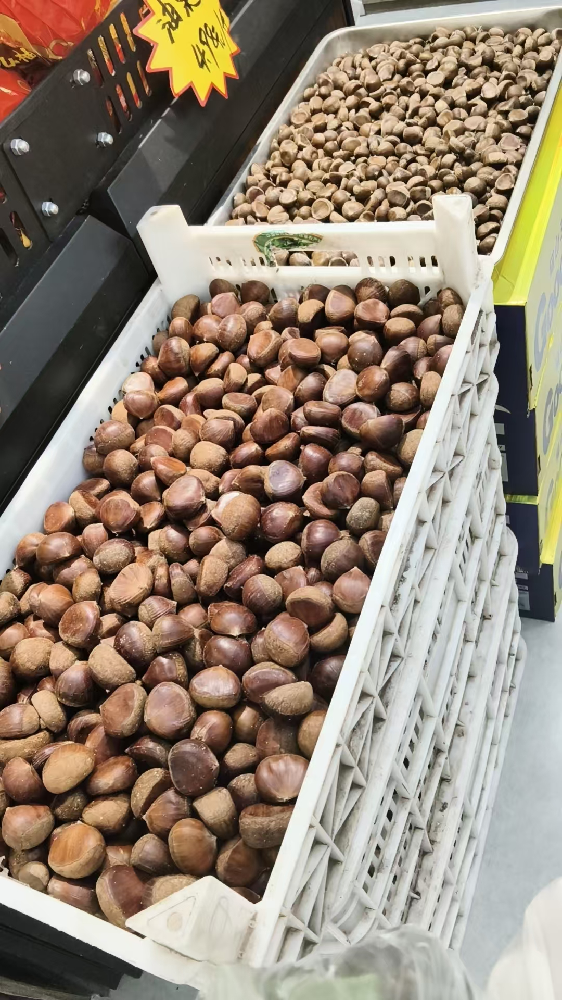
上次买的大栗子
不能吃
煮出来里面跟烂的一样，口感也不好，这里的孩子没吃，家里的几乎都扔了
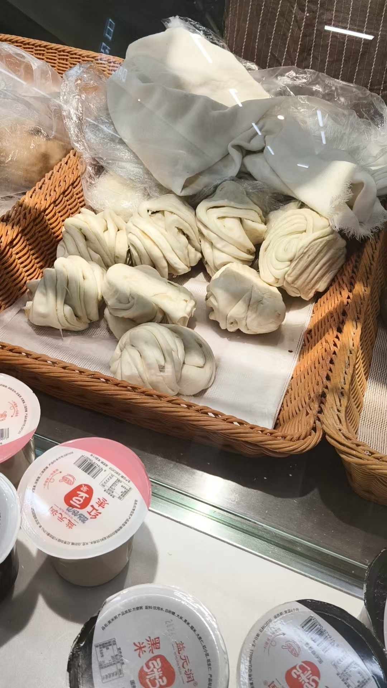
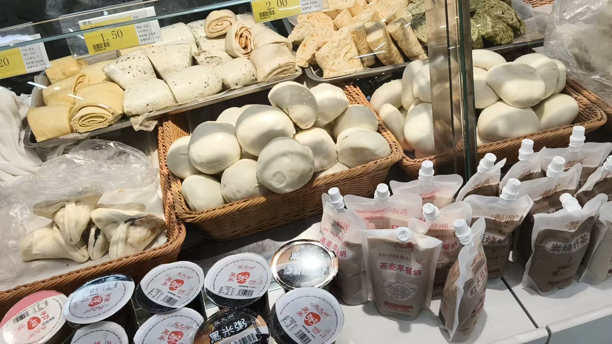
脂饼，糖三角
韭菜盒子
杠子头
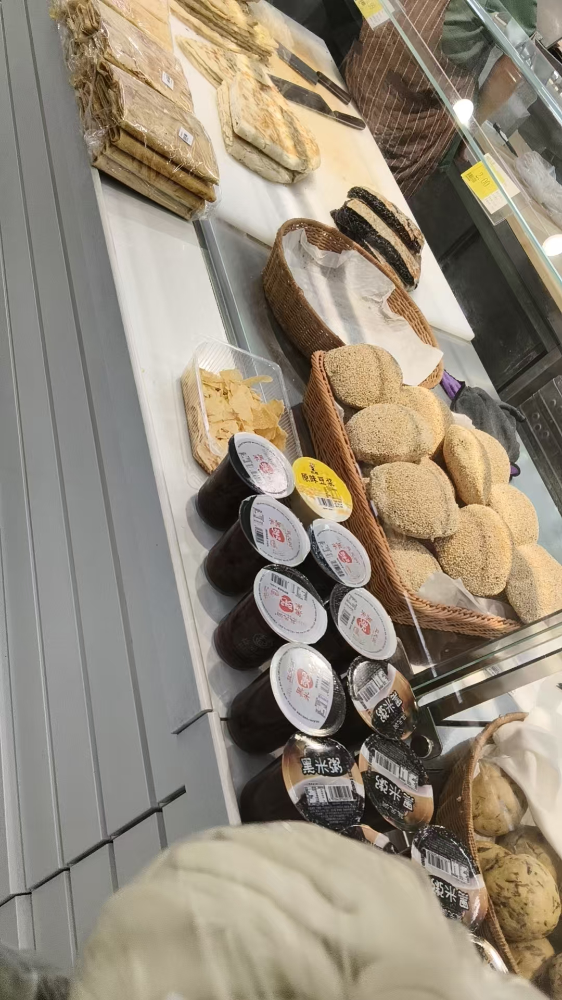
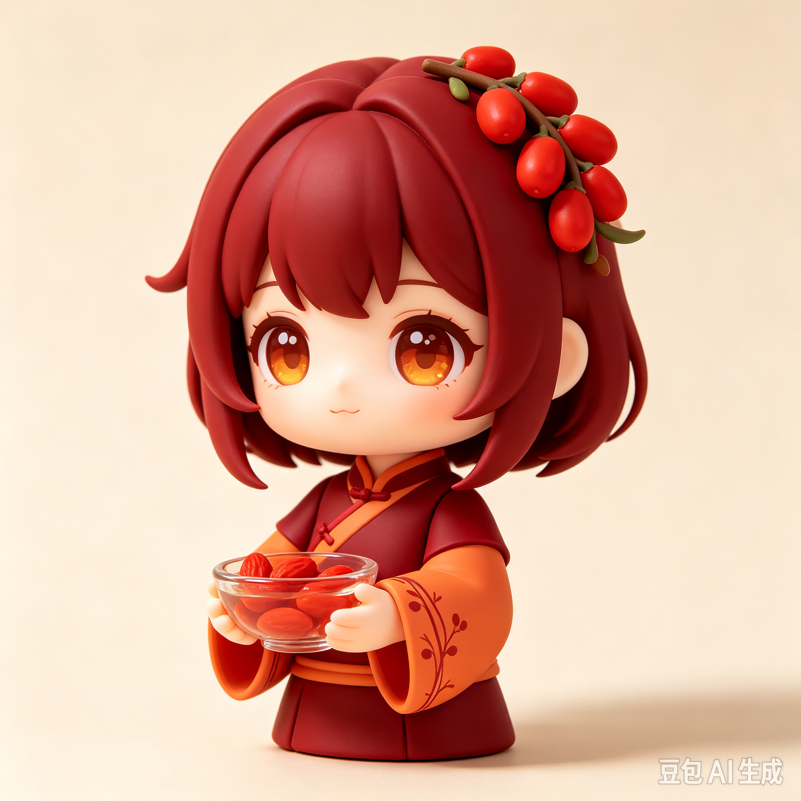
阳神搞起来🌞🌞🌞
阳神聚餐
只手摘星辰
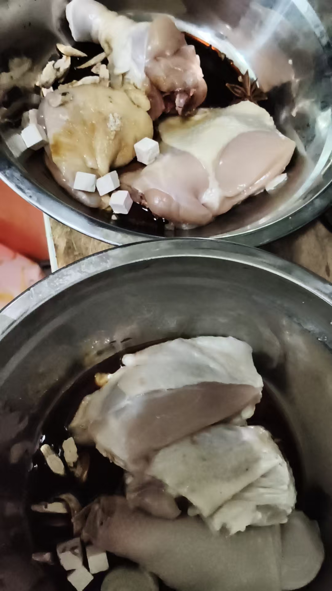
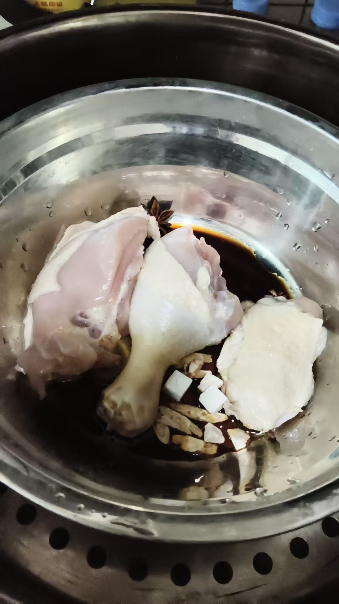
孩子们不吃素
[呲牙][呲牙]
明早一人一个大鸡腿
加的白芷，健脾，除湿
黄芪
今晚就蒸出来
古来厨子会用药
各种香料，本来就是中药材
[强][强][强]
忙里偷闲，闲里偷忙
徐州回来，过来两个孩子
本来一个就不走了
[呲牙][呲牙]
东莞又要过来几个
成人
[呲牙][呲牙][呲牙]厨师做饭肯定好吃，就怕孩子回家，吃不了家里的饭了
想起那时候厨师竞选
三个人选厨师长
一个拿了猪肚，一个拿了海参
我拿了两个土豆
炒了个酸辣土豆丝
结果我成了厨师长
[憨笑][憨笑][憨笑]
酸辣土豆丝，熬汁，点糖
上桌，一般都用馒头擦盘子里的汁，吃了
就剩空盘子
也是一绝
师父你太厉害了
以后我去您必须做这个酸辣土豆丝
[呲牙][呲牙]
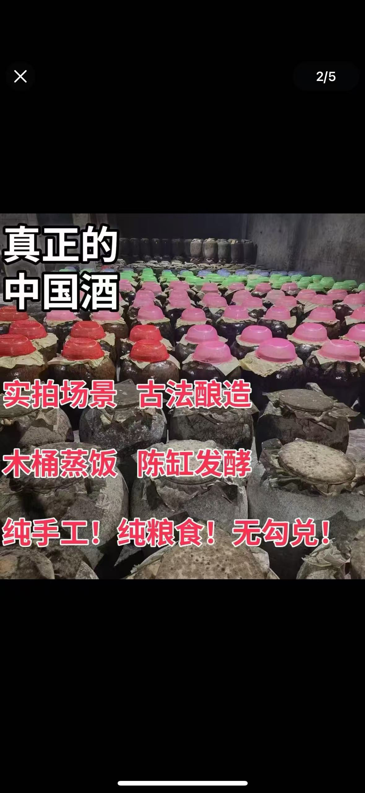
我们家的酒都是用大缸酿的